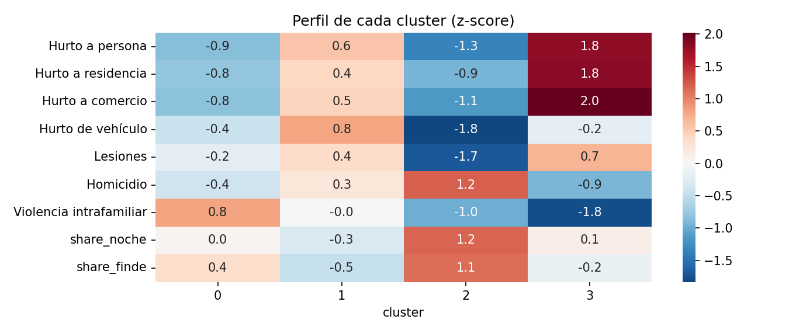
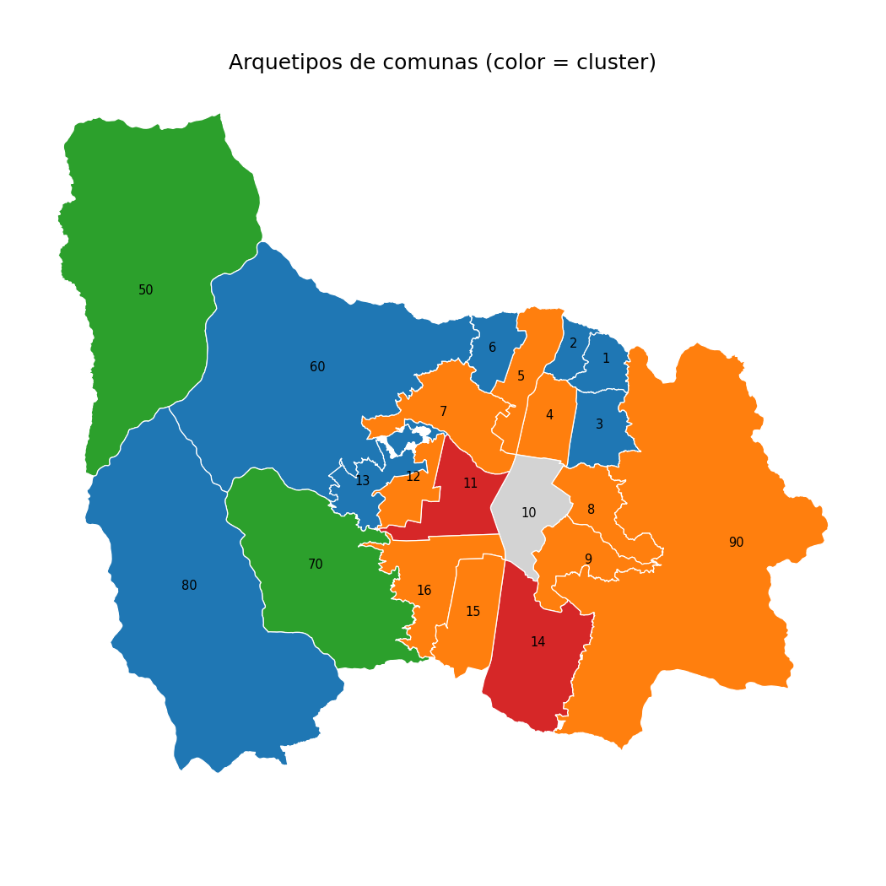
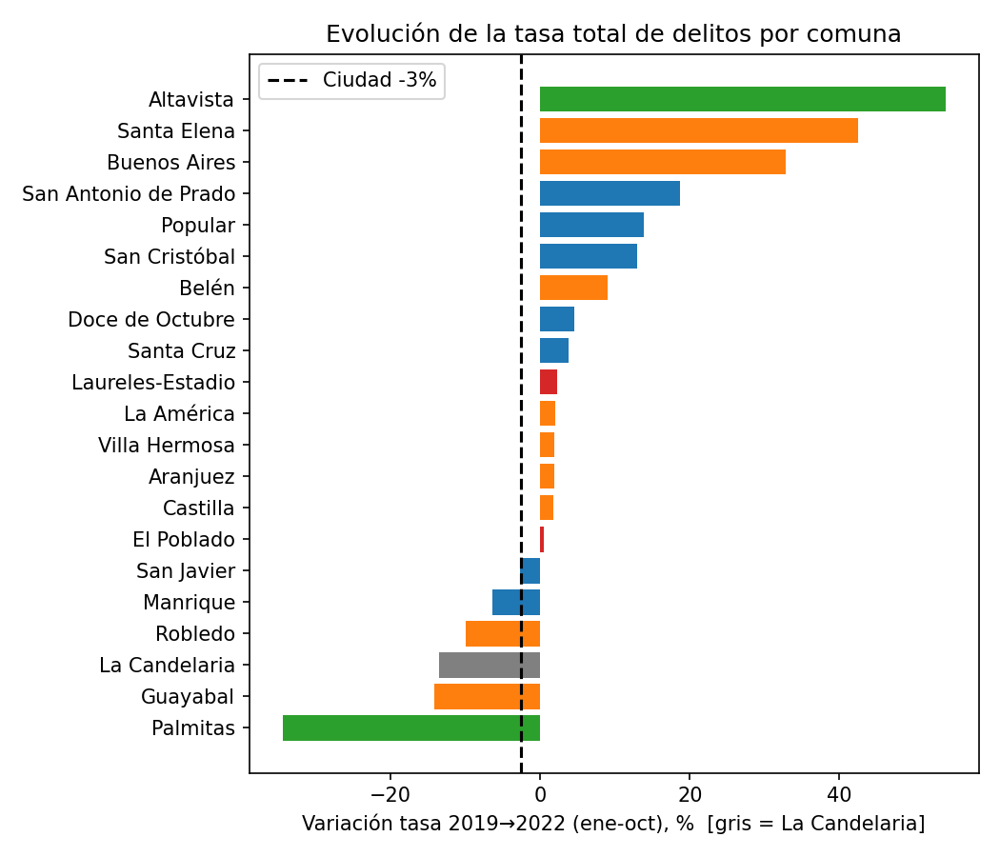

La formulación de estrategias de seguridad ciudadana a nivel municipal suele apoyarse en agregaciones globales o en clasificaciones univariadas que invisibilizan la marcada heterogeneidad criminológica del territorio. En este artículo se propone un marco analítico reproducible para tipificar las comunas y corregimientos de Medellín mediante técnicas de aprendizaje no supervisado. A partir de 10 fuentes oficiales de microdatos (MEData) que consolidan 314.594 registros entre 2019 y 2023, se implementó un riguroso protocolo de deduplicación de hechos (obteniendo 241.676 eventos únicos), homologación espacial y estandarización de tasas por 100.000 residentes en una ventana homogénea enero–octubre.
Mediante un algoritmo \(K\text{-Means}\) (\(k=4\)) evaluado sobre 9 dimensiones (7 tasas tipológicas transformadas logarítmicamente y 2 proporciones temporales de ocurrencia), complementado con validación cruzada mediante agrupamiento jerárquico de Ward y análisis de componentes principales (PCA), se identificaron cuatro arquetipos territoriales bien diferenciados: (1) Ladera residencial (baja incidencia de hurto patrimonial y alta prevalencia de violencia intrafamiliar); (2) Urbana intermedia (hurto moderado con alta concentración de sustracción de motocicletas y automotores); (3) Centro-sur comercial y ocio (hiperconcentración de hurto a personas y comercios, con baja tasa de homicidios); y (4) Rural periférico (volúmenes delictivos absolutos muy bajos pero tasas inestables). La comuna 10 (La Candelaria) fue tratada analíticamente como una entidad atípica exógena debido a la distorsión severa provocada por la población flotante en el denominador residencial.
El análisis evolutivo 2019 \(\to\) 2022 revela una divergencia sustancial frente a la media de la ciudad (\(-2.6\%\)): comunas del arquetipo de ladera residencial como Popular (\(+14\%\)) y San Antonio de Prado (\(+19\%\)), así como Buenos Aires (\(+33\%\)), exhibieron deterioros alarmantes, mientras que zonas comerciales intermedias como Guayabal (\(-14\%\)) y Robledo (\(-10\%\)) experimentaron reducciones sistemáticas. Los hallazgos sugieren abandonar los esquemas homogéneos de patrullaje policial en favor de respuestas diferenciadas: abordaje psicosocial y preventivo intrafamiliar en laderas, frente a intervenciones situacionales y de vigilancia en corredores comerciales y de ocio nocturno.
1. Introducción y Contexto Territorial
Medellín, la segunda urbe en relevancia demográfica y económica de Colombia, ha experimentado durante las últimas tres décadas transformaciones estructurales profundas en sus patrones de seguridad pública. No obstante, los análisis basados en cifras agregadas metropolitanas tienden a encubrir dinámicas hiperlocales diametralmente opuestas. Mientras los homicidios y las modalidades de violencia letal han alcanzado mínimos históricos relativos, la percepción de inseguridad se ve condicionada por el comportamiento dispar de delitos de alto impacto patrimonial (hurto a personas, vehículos y residencias) y problemáticas de violencia al interior de los hogares.
Las políticas de despliegue operacional de cuadrantes de policía y programas de inversión social requieren diagnósticos objetivos que trasciendan la simple ordenación unidimensional por número de denuncias. Una comuna no es intrínsecamente "peligrosa" o "segura" de manera homogénea: la naturaleza del riesgo cambia radicalmente según la estructura socioespacial, la densidad de equipamientos urbanos y la dinámica temporal de la actividad humana. El presente estudio responde a la pregunta: ¿Es posible identificar perfiles arquetípicos estables de seguridad urbana en Medellín mediante aprendizaje estadístico no supervisado, y cuáles son las implicaciones prácticas para el diseño de políticas públicas diferenciadas?
2. Adquisición, Limpieza y Preparación de Datos
Para garantizar la reproducibilidad y neutralidad del estudio, se utilizaron exclusivamente repositorios públicos abiertos del ecosistema municipal y nacional.
2.1 Fuentes de Información
- Delitos de Alto Impacto (MEData): 10 microbases oficiales correspondientes a homicidios, hurto a personas, hurto en transporte público, hurto a residencias, hurto a establecimientos comerciales, hurto de carros, hurto de motos, lesiones personales dolosas no fatales y solicitudes de medidas de protección por violencia intrafamiliar (VIF).
- Demografía (DANE / MEData): Proyecciones poblacionales anuales desagregadas por comuna y corregimiento para los años 2019 y 2020, extrapoladas linealmente para las vigencias 2021 a 2023.
- Cartografía Vectorial: Capa oficial GeoJSON de las 16 comunas urbanas y 5 corregimientos de Medellín en sistema de coordenadas WGS84 (\(\text{EPSG:4326}\)).
- Entorno Urbano (OpenStreetMap): Puntos de interés georreferenciados correspondientes a establecimientos nocturnos (bares, discotecas), sucursales bancarias/cajeros automáticos, infraestructura educativa y estaciones de policía/CAIs.
2.2 Decisiones Metodológicas de Curaduría
La preparación de registros delictivos presenta desafíos habituales de duplicidad administrativa y sesgos de cobertura que fueron resueltos mediante las siguientes pautas:
| Decisión Metodológica | Justificación Técnica / Impacto Empírico |
|---|---|
| Deduplicación por Hecho Único |
En bases policiales, si en un mismo hurto a residencia se sustraen 4 artículos diferentes, el sistema genera 4 filas idénticas. Se construyó una clave unívoca basada en dataset + fecha + coordenadas + barrio + modalidad, pasando de 313.941 filas brutas a 241.676 eventos únicos (reducción del \(23.0\%\)).
|
| Ventana Homogénea Enero–Octubre | Dado que la vigencia 2023 en MEData presentaba corte en noviembre, se acotó estrictamente cada año al periodo 1 de enero al 31 de octubre, eliminando distorsiones por longitud desigual de las series. |
| Exclusión del Año 2020 en el Perfil Base | Las medidas de confinamiento estricto por la pandemia de COVID-19 alteraron sustancialmente la movilidad ciudadana y las tasas base de criminalidad callejera; 2020 se utiliza para series temporales pero se excluye de la tipificación estructural. |
| Tratamiento Aislado de La Candelaria (Comuna 10) | La Candelaria concentra la actividad del centro histórico y administrativo. Con una población residente de \(\approx 85.000\) personas pero más de \(1.200.000\) visitantes diarios, su tasa calculada de hurto a personas superaba los 8.000 por 100k hab. Introducirla en el agrupamiento generaba un cluster unigenerado que colapsaba la varianza del resto de comunas. Se clasificó como caso atípico estructural. |
En la vigencia 2023, el \(12.1\%\) de los registros de delitos en MEData carece de asignación geográfica de comuna (frente a un margen inferior al \(0.9\%\) observado entre 2019 y 2022). Esto produce anomalías estadísticas artificiales (por ejemplo, corregimientos como Altavista pasan de 156 hurtos a 1 solo caso). En consecuencia, para el modelado de arquetipos y análisis evolutivo riguroso se adoptó como ventana de referencia 2019–2022.
3. Ingeniería de Características y Estandarización
Para cada unidad territorial \(i \in \{1, \dots, 20\}\) y año de análisis \(t\), se computó la tasa bruta anualizada por 100.000 habitantes para cada uno de los 7 delitos:
\[\text{Tasa}_{i, k} = \frac{\sum_{t \in \{2019, 2021, 2022\}} \text{Eventos}_{i, k, t}}{\sum_{t \in \{2019, 2021, 2022\}} \text{Población}_{i, t}} \times 100.000\]
Dada la marcada asimetría positiva en la distribución de las tasas delictivas entre zonas urbanas densas y zonas semirurales, se aplicó una transformación logarítmica \(\ln(1 + \text{Tasa})\) a los 7 delitos evaluados. Adicionalmente, se calcularon dos rasgos temporales extraídos de la microdata:
- Proporción Nocturna (\(\text{share\_noche}\)): Porcentaje de hechos ocurridos entre las 20:00 y las 05:59 horas.
- Proporción de Fin de Semana (\(\text{share\_finde}\)): Porcentaje de hechos registrados durante sábados y domingos.
El vector final resultante de 9 variables fue normalizado mediante z-score (\(\mu=0, \sigma=1\)) antes de suministrarse a los modelos de particionamiento:
\[z_{i, j} = \frac{x_{i, j} - \bar{x}_j}{s_j}\]
4. Modelado No Supervisado y Perfil de los Arquetipos
Se implementó un algoritmo \(K\text{-Means}\) con inicialización \(k\text{-means++}\), evaluando soluciones con \(k \in [2, 6]\). Si bien el coeficiente de Silhouette máximo se observó en \(k=2\) (\(0.27\)), dicha partición solo separaba comunas urbanas de corregimientos rurales, perdiendo riqueza operacional. La solución con \(k=4\) arrojó una coherencia interpretativa notable y una concordancia moderada-alta frente al método jerárquico aglomerativo de Ward (Índice de Rand Ajustado, \(\text{ARI} = 0.50\)).

Figura 1. Perfil estandarizado de cada cluster (puntuaciones \(z\)) para los 7 delitos analizados y los dos indicadores temporales. Los valores rojos intensos señalan tasas sustancialmente superiores a la media de la ciudad; los azules representan valores por debajo de la media.A partir de los centroides normalizados y las tasas medias reales, se formalizan los cuatro arquetipos de seguridad de Medellín (más el caso atípico de La Candelaria):
| Arquetipo | Comunas y Corregimientos Integrantes | Rasgos Criminológicos Distintivos | Entorno Físico y Servicios |
|---|---|---|---|
| A. Ladera Residencial | Popular (1), Santa Cruz (2), Manrique (3), Doce de Octubre (6), San Javier (13), San Cristóbal (60), San Antonio de Prado (80) | Baja tasa de hurto a personas (\(191\) por 100k), bajo hurto vehicular (\(72\)) y baja sustracción comercial. En contraste, presenta la tasa más alta de violencia intrafamiliar (\(202\) por 100k hab). | Estructura urbana de ladera, predominio residencial estratos 1 y 2. Muy baja densidad bancaria (\(0.3\) sucursales/\(\text{km}^2\)) y comercial formal. |
| B. Urbana Intermedia | Aranjuez (4), Castilla (5), Robledo (7), Villa Hermosa (8), Buenos Aires (9), La América (12), Guayabal (15), Belén (16), Santa Elena (90) | Niveles medios de hurto a personas (\(739\) por 100k hab), pero la mayor tasa de hurto de vehículos (\(235\) por 100k, con predominio de motos). Lesiones dolosas moderadas (\(128\)). | Zonas consolidadas de clases medias (estratos 3 y 4), mixtura de vivienda con corredores viales y comerciales barriales (\(1.2\) bancos/\(\text{km}^2\)). |
| C. Centro-Sur Comercial y Ocio | El Poblado (14), Laureles-Estadio (11) | Máxima concentración de hurto patrimonial: hurto a personas (\(2.226\) por 100k hab, \(11.6\) veces superior a la ladera), hurto a comercio (\(337\)) y residencias (\(146\)). Sorprendentemente, presenta la tasa de homicidios más baja (\(8\) por 100k). | Zonas de alta renta (estratos 5 y 6), hiperdensidad de locales de ocio nocturno (\(5.9\) bares/\(\text{km}^2\)), polos gastronómicos y entidades financieras (\(5.1\) bancos/\(\text{km}^2\)). |
| D. Rural Pequeño | San Sebastián de Palmitas (50), Altavista (70) | Conteos delictivos absolutos muy reducidos debido a su baja densidad poblacional. Sin embargo, ante eventos aislados de homicidio, la tasa por 100k experimenta volatilidades extremas. | Extensión territorial predominantemente rural y montañosa, con virtual ausencia de servicios financieros o de vida nocturna registrada. |
| Caso Atípico | La Candelaria (10 · Centro) | Tasa total consolidada de delitos \(\approx 11.000\) por 100k residentes (de 3 a 7 veces la magnitud de cualquier otra comuna). | Epicentro neurálgico del Valle de Aburrá. Concentra terminales de transporte masivo, comercio minorista masivo y máxima densidad de servicios urbanos. |

Figura 2. Distribución espacial de los arquetipos de seguridad en el municipio de Medellín. Azul: Ladera residencial; Naranja: Urbana intermedia; Rojo: Centro-sur comercial y de ocio; Verde: Rural pequeño; Gris: La Candelaria (caso atípico).5. Evolución Temporal y Tendencias (2019 \(\to\) 2022)
Para examinar si los perfiles delictivos obedecen a estructuras estáticas o a procesos en transformación, se calculó la variación porcentual en la tasa delictiva global entre el periodo prepandemia (enero-octubre 2019) y la consolidación post-reactivación (enero-octubre 2022).

Figura 3. Variación porcentual en la tasa de delitos por comuna (enero–octubre 2019 \(\to\) 2022). La línea punteada indica el promedio general de la ciudad (\(-2.6\%\)). Zonas como Buenos Aires, San Antonio de Prado y Popular exhiben crecimientos preocupantes muy por encima de la media municipal.Mientras el total agregado de Medellín registró una leve mejoría de \(-2.6\%\) en la tasa delictiva, el comportamiento interno fue asimétrico:
- Empeoramiento Severo (> 5 pp sobre la ciudad): Buenos Aires (\(+33\%\)), San Antonio de Prado (\(+19\%\)), Popular (\(+14\%\)), San Cristóbal (\(+13\%\)), Belén (\(+9\%\)) y Doce de Octubre (\(+4.5\%\)). Nótese que 4 de las 7 comunas del arquetipo de ladera residencial registraron un deterioro pronunciado.
- Mejoría Sostenida: Guayabal (\(-14\%\)), La Candelaria (\(-13.5\%\)) y Robledo (\(-10\%\)).
- Estabilidad: Comunas de alta renta como El Poblado (\(-1\%\)) y Laureles-Estadio (\(+2\%\)) mantuvieron sus niveles delictivos estables a lo largo del cuatrienio.
6. Discusión y Limitaciones Metodológicas
En consonancia con las mejores prácticas en ciencia de datos y evaluación de políticas públicas, los resultados deben interpretarse bajo las siguientes salvedades:
- Estructura de Grupos Moderada: Los coeficientes de Silhouette (\(0.18\) a \(0.27\)) y la concordancia entre semillas (\(\text{ARI} = 0.43\)) demuestran que los grupos constituyen una tipología descriptiva de valor táctico, no una partición discreta e inflexible. La transición espacial entre comunas intermedias y de ladera es continua.
- El Horario no Discrimina entre Arquetipos: La proporción de hechos en franja nocturna oscila de manera homogénea entre el \(26\%\) y el \(30\%\) en todos los conglomerados; los horarios delictivos se distribuyen de forma similar independientemente del estrato socioeconómico.
- Sesgo de Subregistro y Denuncia Diferencial: Los datos provienen exclusivamente de delitos formalmente denunciados ante Policía o Fiscalía. En comunas con presencia de grupos de delincuencia común organizada (GDCO), la coacción comunitaria reduce la denuncia de delitos cotidianos, pudiendo aparentar artificialmente menores niveles delictivos que en zonas donde la ciudadanía denuncia sistemáticamente.
- Distorsión por Población Flotante: Calcular tasas por residentes per cápita sobrestima el riesgo en zonas receptoras netas de trabajadores y turistas (El Poblado, Laureles, Centro) y subestima el riesgo relativo en comunas dormitorio.
7. Implicaciones y Recomendaciones de Política Pública
Los resultados ofrecen una guía empírica para que la Secretaría de Seguridad y Convivencia y la Policía Metropolitana optimicen la asignación de presupuestos y capacidades operativas:
Incrementar el patrullaje motorizado preventivo para disuadir hurtos resulta ineficiente en zonas donde el hurto es bajo pero la violencia intrafamiliar y las lesiones personales son críticas. Se recomienda reforzar las comisarías de familia móviles, rutas de atención a la mujer, mediación de conflictos vecinales y sistemas de alerta temprana en Popular, San Cristóbal y San Antonio de Prado (donde las tendencias delictivas van en franco deterioro).
La prioridad en comunas intermedias como Aranjuez, Castilla y Belén debe centrarse en el hurto de motocicletas y vehículos mediante cámaras de reconocimiento automático de placas (LPR), control a talleres de autopartes y patrullaje en horarios vespertinos en corredores barriales. Se requiere una auditoría prioritaria sobre la comuna Buenos Aires para determinar las causas de su incremento de \(+33\%\).
En El Poblado y Laureles, el hurto a personas y locales comerciales en fines de semana y horarios nocturnos requiere presencia policial mixta (pie y bicicleta), articulación con redes de comerciantes formales, mejora en luminarias y videovigilancia analítica en zonas gastronómicas y de ocio.
La medición de seguridad del Centro no puede seguir basándose en los 85.000 residentes censados. La Secretaría de Seguridad debe formular un indicador de delitos por millón de transeúntes / viajes origen-destino para evaluar con rigor el impacto real de las intervenciones policiales.
8. Referencias y Repositorios de Datos Abiertos
- MEData (Alcaldía de Medellín): Portal oficial de datos abiertos. Datasets temáticos de Seguridad y Defensa (Homicidios, Hurtos, Lesiones y Violencia Intrafamiliar 2019-2023). URL: medata.app.medellin.gov.co
- DANE (Departamento Administrativo Nacional de Estadística): Censo Nacional de Población y Vivienda (CNPV 2018) y Proyecciones de Población a nivel municipal y de comuna.
- OpenStreetMap Contributors (2024): Extracciones vectoriales vía Overpass API de puntos de interés (POIs de ocio, comercio, educación y banca) para el polígono del municipio de Medellín.
- MacQueen, J. (1967): Some methods for classification and analysis of multivariate observations. Proceedings of the Fifth Berkeley Symposium on Mathematical Statistics and Probability.
- Rousseeuw, P. J. (1987): Silhouettes: a graphical aid to the interpretation and validation of cluster analysis. Journal of Computational and Applied Mathematics, 20, 53-65.